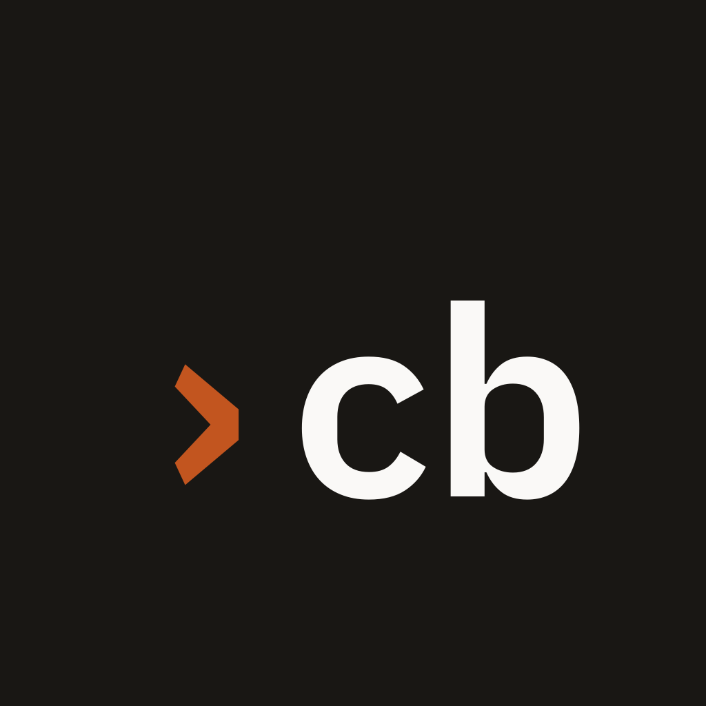
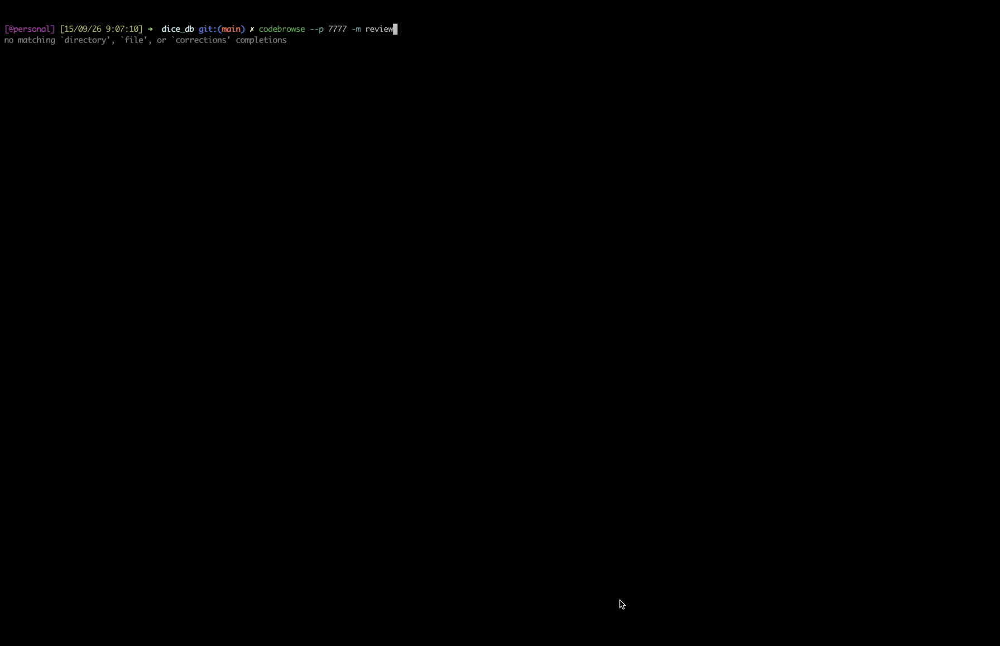

Agents write code in terminals. codebrowse is where you review it: live diffs, line comments, symbol navigation — and the agent's own session one click away. One Go binary, zero dependencies, localhost by default.
go build -o codebrowse .
./serve.sh -r ~/your-repo
Go 1.22+ · no npm, no CGO, no config

The chat panel attaches to your live pi session. The agent knows what it just did — you don't repeat context.
Drag in the gutter, comment on a line or range, discuss with the agent in one click. Pre-PR, pre-commit.
Agent edits appear while you look at them. GitHub-PR style stacked review, scrollspy, viewport preserved.
AST outline, click-any-identifier call sites, parallel content search with regex. All offline, all instant.
| IDE (VS Code) | PR page | codebrowse | |
|---|---|---|---|
| Built for | writing | gating merges | reviewing working code, live |
| Agent context | separate chat tools | none | the agent's own session |
| Line comments | via extensions | after PR exists | instant, pre-commit |
| Weight | ~1.4 GB, 15+ processes | post-hoc only | 1 binary, ~20 MB, <1 s open |
| Shows uncommitted work | yes | no | that's the default view |
# clone & build $ git clone https://github.com/stillNovice/codebrowse.git && cd codebrowse $ make build # review any repo — chat resumes your terminal pi session $ ./codebrowse -r ~/src/some-repo → http://127.0.0.1:4004